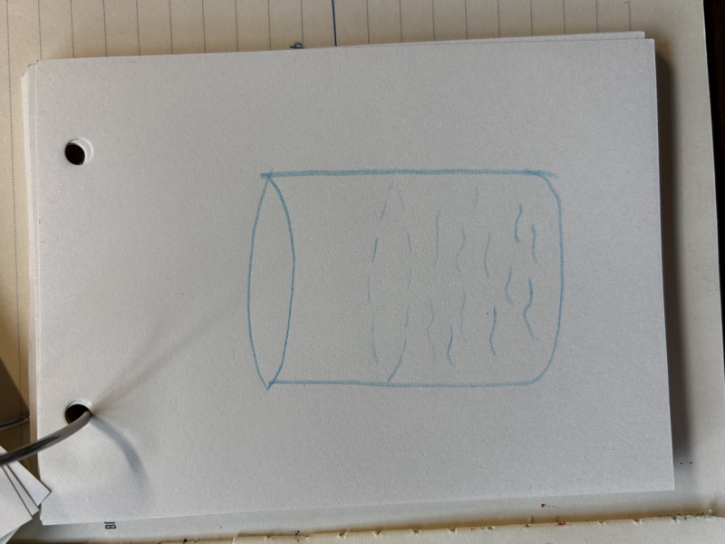
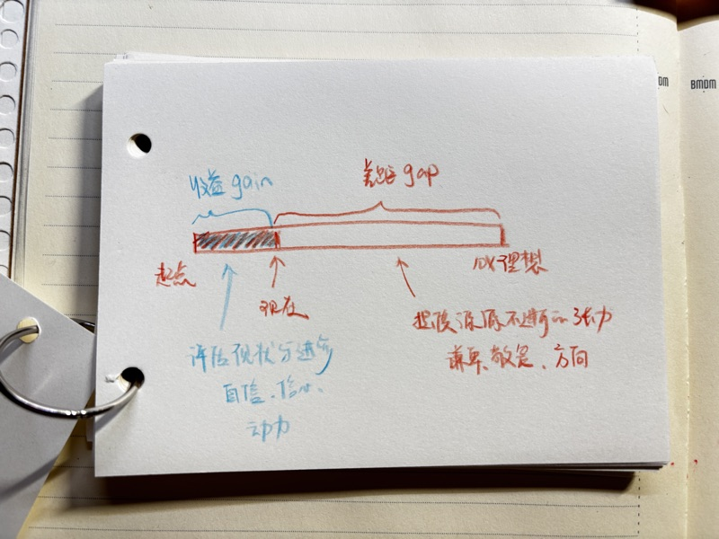
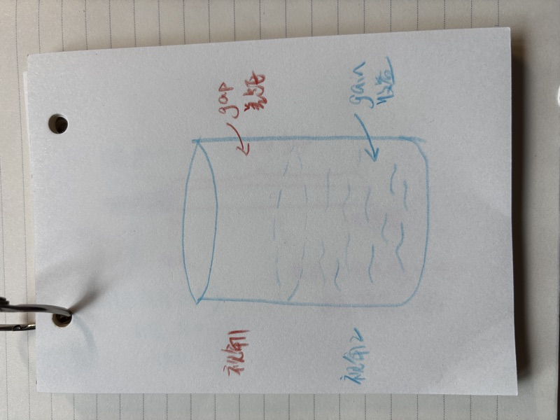

巴迪欧：真正的改变不是改良，而是来自断裂性的事件，以及对它的忠诚。
杯中有一半的水，你是先看到竟然有半杯水，还是先看到没满的水杯？

昨天我推荐了睡前撰写进步本，记下当天取得的三次成就。
这一天中的最后一个小时，决定了你的睡眠质量以及第二天的状态。
人们容易记住"未尽之事"，忽略"已做之事"；而幸福与丰盈，恰恰正来自于"已做之事"。
我从 6.29 开始写进步本，差不多大半个月，我发现有几个很重要的点，容易被忽略。
这里举几个我的反例。
- 有一天我的记录是：阅读 2.5h，写作一篇，游泳 30min
- 另一天记录：今日收款 600 元
为什么这样的记录实际上无效呢？有两点原因：
- 把进步本写成了打卡本，做了什么，做了多久。
- 把进步本写成了成功日记，只写成功的结果，没有写失败的尝试，导致我有几天没有收款，绞尽脑汁也想不到成功的结果时，就觉得无事可写，更沮丧了。
我在一开始记录的时候，并没有注意到 「失败的尝试」 竟然更为重要。
一切都基于一个心理的转变：能够将每一次经历，无论成败，都转化为经验和更有价值的学识与成长，这正是进步发生的地方。
进步发生在每一次的努力尝试和失败之后的总结经验，最终的成功只是这些总结经验达到一定阈值后，顺其自然的结果。
01收益（Gain）与差距（Gap）模型
接下来会介绍一个模型。
有这样一个评估现状和进步的模型。它既能让我们看到当下的成绩，也可能让我们看到自己与理想之间的无限差距。

许多大师在功成名就之后依旧保持谦卑，他们深知自己和理想之间仍有巨大的鸿沟。
然而，我们不应该抹杀自己从过去的起点到今天所获得的所有成绩。
这一切都需要灵活和动态的视角转变。
在评估现状和进步时，我们不能只盯着当下与理想之间的差距，而应该看当下和过去的自己相比，到底取得了多少收获与进步。
这种视角的转变，能让我们更有幸福感和动力，去跨越通往理想的鸿沟（gap），实现一次又一次的飞跃。
理想如同沙漠中的地平线，它们能提供光明与方向，却永远无法触及。
无论你朝地平线迈出多少步，它总会不断地后移，依旧遥不可及。
这正是我们更不应该只盯着自己与理想差距的原因。
它们虽有助于指明方向，但不应成为衡量自己现状的标准。
非常多的大师，明明取得了不菲的成绩，却一直盯着自己和理想之间的差距，陷入抑郁甚至自杀的境地。
这就像面对半杯水：
- 如果只看到杯中的水，我们就会自满，容易安于现状而停滞不前。
- 如果只看到杯中未满的空气，我们就会沉溺于自己与目标之间的遥远距离，从而抹杀了曾经的进步，陷入焦虑和恐惧中，同样可能停滞不前。

这正是注意力会影响我们的视角，进而影响我们整个人生的原因所在。
唯有在特定的情况下去看特定的部分，这才是成长进步与停滞不前的平衡术：
- 视角 2：评估现状和进步时，我们要看"收益"的部分，看自己走到今天积累了多少收获。这是在为我们的幸福感和继续前行储能。
- 视角 1：评估目标和方向时：为了看自己是否偏离了轨道，我们就要看到当前进展与理想之间的差距。这是不断校准方向的视角，能让我们免于沉溺在过去的成绩和收益当中。
在评估自己当前的进步是否在向自己的理想靠近时，需要重新把理想搬出来，看看方向有没有错。
比如说，你明明是想成为一个对待亲人、朋友充满耐心的人。但是评估自己现状和进步时，却说 "我在工作上已经非常努力了，也取得了巨大的进步，所以没人能够批评我今天没有保持耐心"。
02将表面的损失转化为实际的收益
如何理解"收益状态"更深层次的含义？
我理解了，看见"收益"能够帮助我们准确地衡量自身的进步，只是停留在此，便错失了其更深层次的意义：
无论成败，收益视角，能够让我们将每一次经历都转化为更有价值的学识与成长。
我们不应该只是看到自己有收获的部分，而忽略失败的尝试。
"爱迪生在进行灯泡实验时，经历了成千上万次的尝试。他从不认为那些失败是浪费时间，反而坚信每一次失败都是他的收获与进步，因为他至少证明了哪些材料是不适合做灯芯的。"
我们在评估自己的现状与进步时，不能只看到实质性的、正向的收获，还要看到那些尝试性的、失败的实验。
例如，我在尝试撰写系列销售信来推广我的产品时，如果这一次尝试并没有带来任何销售转化，并不代表我在此事上没有任何进展。恰恰相反，这正是进步与成长发生的地方。
我们所说的"没有任何收获"，是指您在此处没有任何技能上的提升。
当我们逃避重要的事情、没有做任何尝试时，我们才将其定性为在此事上没有任何进展。
如果不把每一次经历都转化为学习和成长，那就无法持续变得更好、更独特，这恰恰是十倍增长的核心要义。
03进步本不是打卡
再来说，为什么写成打卡本，也错失了进步本真正的重点。
打卡关注的是任务的完成度，而进步关注的是认知的更新率。
把进步本写成打卡本，实际上是绕过了最高价值的自主思考过程，陷入低水平勤奋的陷阱。
放在我身上，一开始阅读 2h30min 的打卡，在我进行调整之后，进步本的记录如下：
"昨天我为了赶进度在拼命地读《10X》，本想两天读完，以获得对其更全局的理解，一直在关注还有多久可以读完，并没有把注意力放在真正的内容上。
脑子里的想法是，等我全部读完了，再来复盘、总结和写笔记。
结果两天并没有读完，导致我陷入了一种与理想之间产生落差的低落情绪，不承认自己度过了有意义的一天。
情绪就是精准的感应器，它能感应到我们做这个事情到底是真开心还是假开心。
这就是用设定的理想状态来衡量自己的进步。
第二天我突然反应过来，这种方法无疑是低效的。
而今天，仅仅是一个视角的转变，我不再去关心到底读到了哪里，我甚至比昨天读得更慢了。
这种转变在于，我把每一句对自己有启发、没想清楚的、提炼成自己的话、未来的作品、课程内容，转化为一种创造的欲望，进而敦促我思考得更多、写得更多。把一句很小、很细微的点拆解出来，看到了颗粒度更细的东西。（比如上述关于理解"收益状态"更深层次的含义）
我不再关注自己到底读到了哪里，也不再纠结什么时候能读完。
虽然读的量比昨天更少了，但是我的产出质量更高了。我写清楚了"收获与差距"模型的真正含义（相较于昨天），也找回了之前写进步本时被我遗漏的重要原则。
而且我感觉到自己内心的愉悦，以及更加期待第二天的到来。"
这种实质性的进展，给了我巨大的能量。在这之后，我深刻地感受到我这一天是有进展、是有意义的。
这就是把视角放在"收益"，还是放在"差距"上的一个非常细微的例子。
会带来彻底行为上的转变：赶进度、还是读得更深刻。
这个转变非常重要：
听见自己的情绪，信任自己，意识到问题所在，尝试改变，发现心情变好了，感受到真实的收益与喜悦。
于是，一个自主的，无需外部驱动的内驱力就诞生了。做这件事本身就能够给我带来喜悦。
这也是为什么，纯打卡，会让你失去动力；
而"尝试—失败—总结经验—发现新方法—再尝试"会给你带来源源不断的动力。
朋友们，非常提倡大家打卡口喷时，除了打卡和发布口喷时间与截图之外，总结一个今天在自己的口喷里的意外发现和思维进步，是在给自己提供源源不断的动力，这个动力是内在的。这也是进步本的深层含义。
只是一个小小的转变，会给你带来无穷的益处。
04今日指引
回忆和口喷这几天以来，你的小小转变，小小尝试，或者小小失败。这真正是进步发生的地方。
去感受什么事情，让你愉悦，什么事情，明明看似在做正确的事，但是心情依旧没有好转，焦虑依旧占上风。
说出来吧！
记得来群里分享，测试看看，信任自己的情绪的尝试，会不会更好。
或者分享自己是如何信任或不信任自己的情绪的。